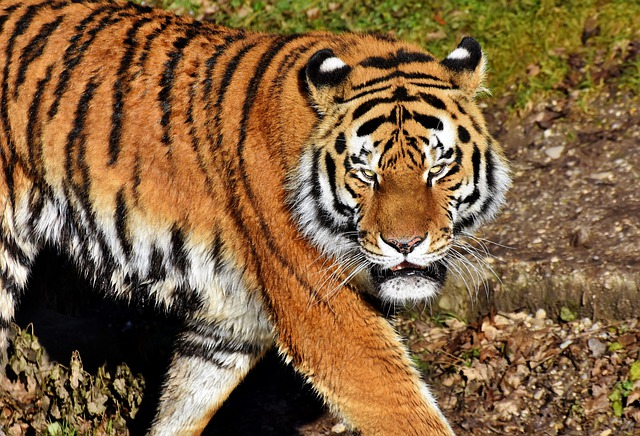

EL TIGRE
04 de Junio de 2018 19:05 por Adrian Ponce
Anteriormente se le consideraba la segunda subespecie en tamaño, detrás del tigre siberiano (P. tigris altaica), sin embargo estudios recientes sugieren que en la actualidad, esta podría ser la subespecie de mayor tamaño. La longitud total de los machos es de 270-310 cm mientras que la de las hembras es de 240-265 cm; la cola mide unos 85-100 cm de largo y la altura a los hombros de 90-110 cm. El peso depende de la región, algunos tigres están por debajo de los 100 kg mientras que otros llegan a los 230 kg en el caso de los machos En Chitwal 7 tigres machos arrojaron un promedio de 221 kg sin embargo, estos tigres fueron alimentados previamente antes de su captura, en un día se observó como una tigresa consumió 30 kg de carne y los machos más grandes tienen mayor ingesta de alimentos. Sin embargo, aquellos machos que habitan el Centro de India, tienen un peso de entre 160 a 233 kg, y un promedio de 190 kg para los machos y de 131 kg para las hembras. Aunque se conoció un gran macho del parque nacional Ranthambore de nombre Ustad (T24) al que se le adjudican la muerte de cuatro personas entre 2010 y 2015 llegó a los 250 kg de peso. Otro gran macho conocido en el Parque nacional de Tadoba e identificado con el nombre de Wagdoh o Scarface peso alrededor de 300 kg11. Los tigres pesados en India no son ajustados al contenido estomacal así que el peso real sería menor.